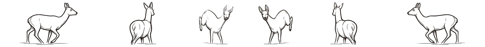

Frei ausfüllbar, an kein Revier gebunden. Trag ein, was Du weißt, lade das PDF herunter und schick es dem Nachsuchenführer — per WhatsApp, Mail oder wie es gerade schnell geht. Es wird nichts gespeichert und nichts übertragen; das Protokoll entsteht auf Deinem Gerät.
| Uhrzeit | Anzahl Schüsse | Wildart / gesch. kg | Geschlecht | Anzahl Stücke | Beobachtungen (gezeichnet, krank …) | von Hund(en) verfolgt | |
|---|---|---|---|---|---|---|---|
| Stück I |
|
||||||
| Stück II |
|
Stellung des Stückes beim Schuss — den vermutlichen Sitz der Kugel antippen, nochmal antippen entfernt ihn. Der Bogen folgt der Wildart aus der Tabelle.
Stück IRehwild

Stück II—
Anschuss antippen — 1. Punkt = Stück I, 2. Punkt = Stück II; Blickrichtung beachten
Gefundene Pirschzeichen zu Stück-Nr.
Stück I
Stück II